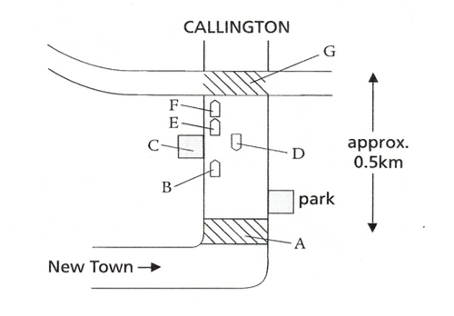
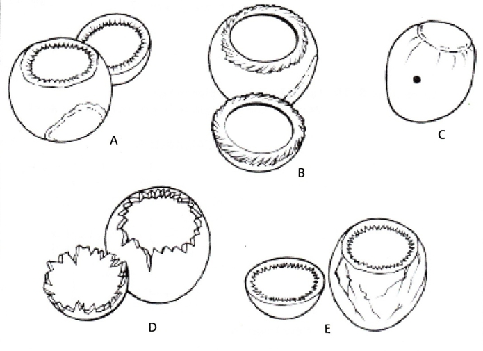

Label the diagram/plan below.
Write the correct letter, A–G, next to questions 8–10.

8 traffic lights 9 petrol station 10 blue van
SECTION 2
Questions 11-14
Complete the sentences below, using NO MORE THAN THREE WORDS for each answer.
11 Dormouse numbers have fallen as well as in the UK. 12 Dormice are about as heavy as two . 13 You are most likely to have seen a dormouse in a . 14 In the UK, dormice probably live in hedges and woods, and next to
.
Questions 15–17
Label the identification sheet below.
Write the correct letter A–E next to questions 15–17. 15 opened by woodmice 16 opened by voles 17 opened by dormice
Hazelnut shells

Questions 18–20
Complete the summary below, using NO MORE THAN ONE WORD in each space.
If you find nuts opened by dormice 18 where
you found them. Put them into some kind of 19
and 20 them (name and address). Post them to
Action for Wildlife.
SECTION 3
Questions 21-26
Which company website has the following features?
A Hills Cycles website B Wheels Unlimited website C Both websites
Write the correct letter, A, B, or C next to questions 21–26.
21 bicycle catalogue
22 price list
23 bicycle accessories
questionnaire because
24 company history
25 online ordering
26 moving graphics
Questions 27-30
Choose the correct letter, A, B, or C.
27 According to the tutor, the basic criterion for evaluating
the websites should relate to
28 On the subject of timing, the tutor says
29 Sarah and Jack will share the work by
30 The tutor advises Sarah and Jack not to
SECTION 4
Questions 31–37
Answer the questions below.
Write NO MORE THAN THREE WORDS AND/OR A NUMBER for each answer.
31 Which elephants stay together all their life?
32 What are elephant family groups known as?
33 When scientists tracked groups of elephants, which feature of behaviour
did they
notice?
34 Which sense do elephants probably use to communicate over long
distances?
35 What did American scientists do with a recording of elephant
calls?
36 What did the elephants in the experiment rush to find?
37 What were scientists unable to do with the recording they had
made?
Questions 38–40
What does the lecturer say about each type of elephant call?
Choose your answers from the box, and write the letters A–G next to questions
38–40. A cannot be heard by humans at all B is usually accompanied by a leg movement C begins and ends at the same pitch D is usually accompanied by a nod of the head E continuously increases in pitch F is repeated over a long period G continually fluctuates in volume 38 Greeting 39 Contact call 40 Summons to move on